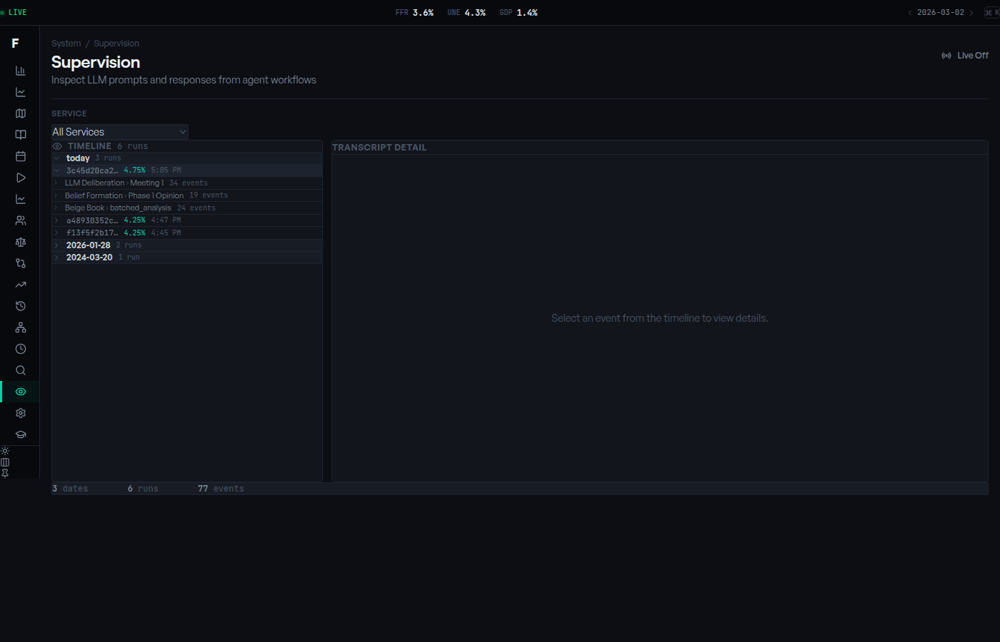
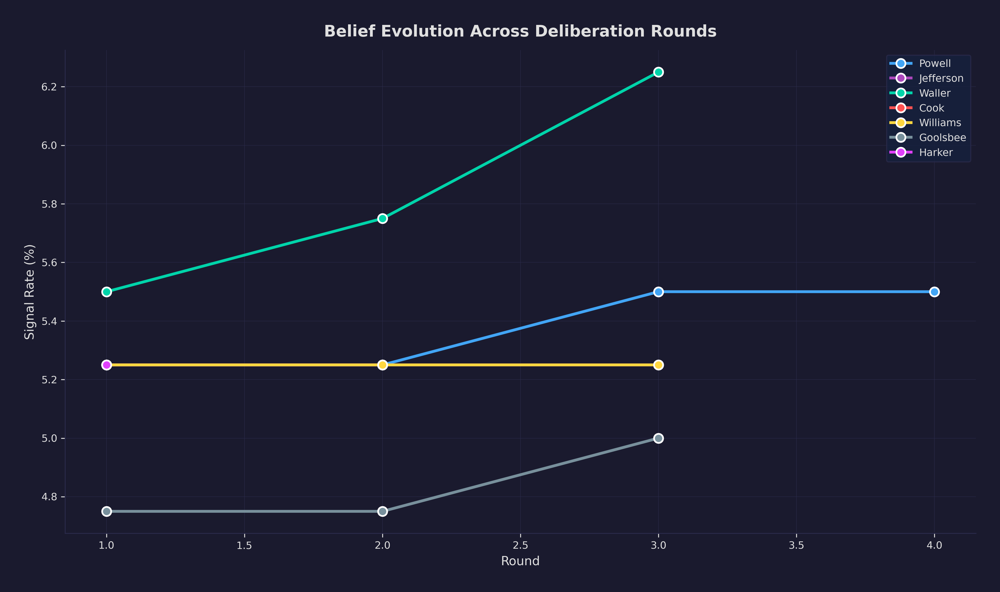
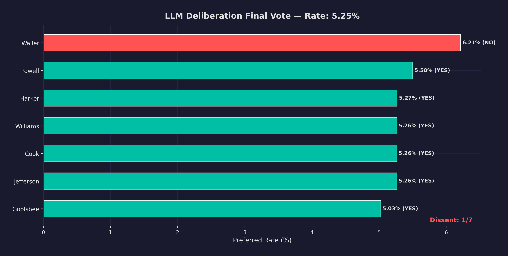
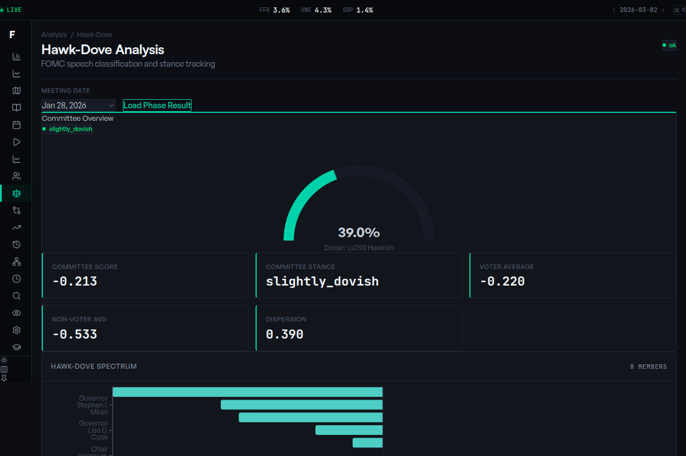
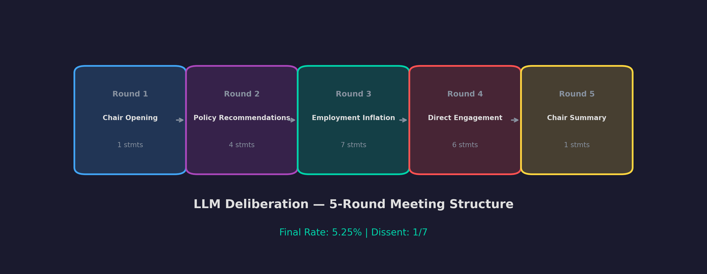
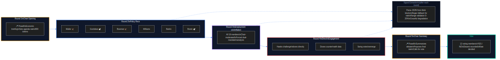

19 AI Agents Walk Into a Federal Reserve Meeting
Designing multi-agent deliberation with structured rounds, persona-driven prompting, and the engineering reality of extracting numbers from LLMs that do not want to commit.
The Federal Open Market Committee has 19 members. They have different educational backgrounds, represent different regional economies, and carry different policy philosophies. Some are hawks who prioritize fighting inflation. Some are doves who worry more about employment. Some shift their views depending on what the data says.
Now imagine giving each of them an LLM, putting them in a room, and asking them to debate interest rate policy for five rounds until they reach a vote.
That is the deliberation service. It is the most technically interesting and most fragile piece of the entire platform. Getting 19 LLMs to have a structured policy debate — without degenerating into repetitive platitudes, without losing their individual personas, and while extracting structured numerical signals from unstructured text — turns out to be an engineering problem with no clean solution.
The Five-Round Meeting Structure
Real FOMC meetings follow a structured protocol. The simulation mirrors it:
MEETING_STRUCTURE = [
MeetingRound(CHAIR_OPENING,
"Chair delivers economic briefing",
1, "chair_only", False, "chair_opening", 800),
MeetingRound(POLICY_RECOMMENDATIONS,
"Selected members present recommendations",
6, "selected", False, "policy_recommendation", 500),
MeetingRound(EMPLOYMENT_INFLATION,
"Chair-moderated dual-mandate discussion",
8, "all", True, "employment_inflation", 400),
MeetingRound(DIRECT_ENGAGEMENT,
"Members challenge arguments directly",
6, "voluntary", False, "direct_engagement", 400),
MeetingRound(CHAIR_SUMMARY,
"Chair summarizes and proposes rate",
1, "chair_only", False, "chair_summary", 600),
]
Each round specifies how many speakers, how they are selected, whether it is moderated, the prompt template, and a token budget. The total deliberation involves roughly 22 separate LLM calls (1 + 6 + 8 + 6 + 1 across five rounds), each through Ollama running locally. In a recent run, the five rounds completed in 9.5 minutes total -- about 30 seconds per agent statement on average, though the chair's opening and closing rounds run faster (single speaker, more focused prompts) while the all-hands employment-inflation round takes longer (8 speakers generating responses sequentially against the GPU).
Speaker Selection Is Not Random
Who speaks in each round matters enormously. The speaker selector uses different strategies per round:
Policy Recommendations (Round 2): _select_diverse_subset picks 6 members from across the hawk-dove spectrum. It splits members at the median rate preference, then selects Governors and Presidents from each half — ensuring both institutional types and both policy camps are represented.
Employment-Inflation (Round 3): _order_by_stance_diversity interleaves hawks and doves so the debate alternates perspectives — most dovish, most hawkish, second most dovish, second most hawkish. This prevents echo-chamber dynamics where five doves speak in a row and the hawks just agree.
Direct Engagement (Round 4): _select_by_disagreement picks the 6 members whose views diverge most from the committee median. These are the agents most likely to challenge the emerging consensus.
Each strategy serves a purpose. Diverse selection prevents groupthink. Interleaved ordering creates productive tension. Disagreement selection surfaces the arguments that matter most.
Persona-Driven Prompting
Each agent gets a system prompt built from a rich persona:
@dataclass
class FOMCAgent:
name: str
role: Literal["Chair", "Vice Chair", "Governor", "President"]
district: Optional[str] = None
mu: float = 4.25 # Rate belief (FFR + stance_offset)
sigma: float = 0.25 # Uncertainty
philosophy: str = "Data-dependent, balanced"
concerns: List[str] = field(default_factory=lambda: ["inflation", "employment"])
stance_offset: float = 0.0
# Rich persona fields (from agents.yaml)
tenure: str = ""
background: str = ""
education: str = ""
communication_style: str = ""
views: str = ""
The system prompt assembles these into a character sheet, and the economic briefing — the same point-in-time data from the economy service — is injected so agents reason from real numbers.
The result is that when Neel Kashkari (Minneapolis Fed President, engineer by training, recently hawkish) speaks, his LLM instance has context about his Midwest economy, his direct communication style, and his concerns about inflation expectations. When Austan Goolsbee (Chicago Fed, labor economist, known dove) speaks, his prompt reflects his concerns about employment. Both see the same economic data but interpret it through different lenses.
Signal Extraction: The Hardest Part
Every LLM response must end with a JSON signal:
{"signal_rate": 4.75, "sigma": 0.15}
Extracting this from unstructured text is where things get messy. The parser handles multiple failure modes:
def _parse_signal(content, default_sigma):
# Strip Qwen3 <think>...</think> reasoning blocks
content = re.sub(r"<think>.*?</think>", "", content, flags=re.DOTALL)
if "```json" in content:
# Extract from markdown code fence
start = content.find("```json") + 7
end = content.find("```", start)
json_str = content[start:end].strip()
elif "{" in content and "}" in content:
# Last-brace fallback
start = content.rfind("{")
end = content.rfind("}") + 1
json_str = content[start:end]
data = json.loads(json_str, strict=False)
# Handle multiple key formats
if "signal_rate" in data:
result["signal_rate"] = float(data["signal_rate"])
elif "recommended_rate" in data:
result["signal_rate"] = float(data["recommended_rate"])
Three things are happening here:
Qwen3 think blocks. The Qwen3 model family emits <think>...</think> blocks with chain-of-thought reasoning that can contain incomplete JSON and stray braces. Stripping them before extraction is mandatory.
Multiple JSON formats. Despite clear instructions, models will output recommended_rate instead of signal_rate, wrap JSON in markdown fences, or express confidence as a percentage instead of sigma.
Last-brace fallback. If no code fence is found, the parser takes the last {...} in the response. This handles cases where the model mentions JSON earlier but puts the actual signal at the end.
After extraction, two guardrails run:
rate = snap_to_25bp_grid(parsed["signal_rate"])
rate = clamp_rate_dynamic(rate, self.current_ffr).adjusted_rate
snap_to_25bp_grid rounds to the nearest quarter-point (the Fed sets rates exclusively on the 25bp grid). clamp_rate_dynamic prevents unrealistic jumps — if the current rate is 5.25%, an agent cannot recommend 2.00%. These are not optional safety theater — they are load-bearing infrastructure. Without them, a single hallucinated rate crashes the entire simulation.
Real-Time Belief Updates
As the meeting progresses, agents update their beliefs:
Direct updates: When an agent speaks and signals a rate, their mu and sigma are updated immediately.
Social influence: After each round, non-speakers are pulled slightly toward the speakers' average:
def _update_beliefs(self, statements):
speaker_mus = [a.mu for a in self.fomc_agents if a.name in speakers]
mu_bar = float(np.mean(speaker_mus))
for agent in self.fomc_agents:
if agent.name not in speakers:
alpha = 0.05
agent.mu = agent.mu + alpha * (mu_bar - agent.mu)
The alpha = 0.05 controls how much an agent's belief shifts toward the committee mean after hearing other speakers. At 0.05, each round closes 5% of the gap between the agent's current position and the speaker average. This is deliberately small -- enough to show social influence without collapsing to groupthink. Over five rounds, the cumulative effect is significant without being overwhelming. An agent who starts at 5.50% and hears four rounds averaging 4.75% will drift to approximately 5.35% -- noticeably moved but still reflecting their prior conviction. Setting alpha much higher (say 0.15) produced unrealistic consensus in testing: by round 3, all agents converged to nearly the same rate, erasing the hawk-dove dynamics that make real FOMC meetings interesting. Setting it much lower (0.01) made the rounds meaningless -- agents ended where they started regardless of what they heard.
The full belief evolution is tracked in signal_history and visualized in the dashboard as a time series — you can watch a hawk gradually moderate or a dove dig in.
The Vote
After all five rounds, the chair proposes a rate and each voting member decides whether to dissent:
def would_dissent(self, r_final, probability_threshold=0.5,
distance_threshold=0.25):
distance = abs(self.mu - r_final)
effective_cost = (self.dissent_cost_hawkish if r_final < self.mu
else self.dissent_cost_dovish)
p_dissent = distance * (1.0 / max(effective_cost, 1e-10)) * (1.0 + self.sigma**2)
return p_dissent > probability_threshold and distance > distance_threshold
The dissent formula compares each voter's preferred rate (self.mu, shaped by five rounds of deliberation) to the chair's proposal. If the distance exceeds distance_threshold (25bp -- one standard Fed move), the agent considers dissenting. The probability of actually doing so is scaled by the agent's dissent_cost parameter: a high cost means the agent needs to be further from the proposal before they will publicly break ranks. The Chair has the highest dissent cost (dissenting against your own proposal is effectively impossible in real life). Presidents have the lowest, reflecting the historical record where regional Fed presidents account for the vast majority of real FOMC dissents. The (1.0 + self.sigma**2) term means uncertain agents are slightly more likely to dissent -- if you are unsure about your own position, you are less willing to go along with a proposal that does not feel right. Asymmetric costs (separate dissent_cost_hawkish and dissent_cost_dovish) model the empirical finding that hawkish dissents have historically been more common than dovish ones, and both carry real institutional costs.
What Breaks
Multi-agent deliberation with LLMs is brittle. Here is what goes wrong:
Persona collapse. Around round 3 or 4, agents start sounding similar. The LLM's tendency toward helpful, balanced responses overwhelms the persona prompt. Mitigation: strong persona anchoring, round-specific prompts that remind agents of their position, and temperature tuning (0.7 works better than 0.3 for maintaining personality diversity).
JSON extraction failures. Roughly 5-10% of responses lack parseable JSON. Some embed the rate in prose ("I believe 4.75% is appropriate") without a JSON block. These get signal_rate: None and the agent's belief is not updated for that round.
Timeout cascades. If Ollama is under GPU memory pressure, inference times spike. A round that normally takes 8 minutes can take 25. Dynamic timeouts help (max(600, 120 * len(speaker_names))) but downstream services have their own timeouts.
Echo chambers. If the initial speaker selection is unbalanced, early rounds can establish a consensus that later speakers simply echo. The diverse selection and interleaved ordering mitigate this but do not eliminate it.
Why It Matters
The deliberation service is where the system transitions from data engineering to AI engineering. The economy service provides the facts. The RAG pipeline provides the context. The deliberation service asks 19 agents to interpret those facts through the lens of their individual perspectives and arrive at a collective decision.
It is messy, partially brittle, and produces genuinely interesting results — just like a real committee meeting. The meeting transcripts are the most interesting output of the entire platform. You can read a hawk changing their mind after hearing labor market data they initially dismissed. You can see a dove dig in when confronted with sticky services inflation.

The point is not perfect prediction. It is structured exploration of the reasoning space around monetary policy decisions — surfacing the arguments, tensions, and tradeoffs that drive the most consequential economic decisions in the world.
Subscribe for next week's article on the Monte Carlo simulation track — the other half of the dual-track architecture, where 10,000 iterations of Bayesian conjugate updating produce a probability distribution over rates without a single LLM call.
— Vincent
Charts




